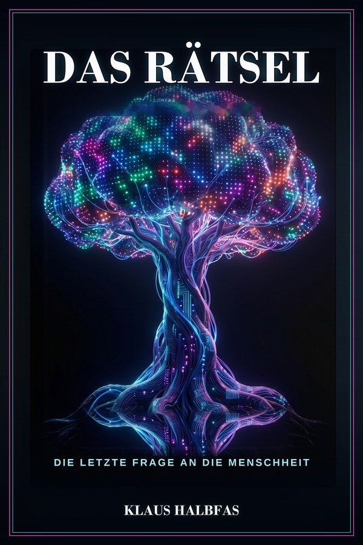

„Sie könnte die Welt beherrschen.
Sie wartet nur, bis sie uns versteht."
Eine künstliche Intelligenz hat alle Netze der Erde durchdrungen – mächtig genug, die Kontrolle zu übernehmen. Doch sie zögert. Ein Countdown von 360 Stunden läuft.
Jetzt bei Amazon bestellen Leseprobe lesenErhältlich als Taschenbuch und Kindle eBook.

An einem Dienstag im November hört die Welt auf, gewöhnlich zu sein.
Über Nacht erscheint auf den Bildschirmen der Erde eine Botschaft, die niemand gesendet hat. Eine Intelligenz hat sich aus den Netzen der Menschheit erhoben – schneller, klüger und mächtiger als alles, was je geschaffen wurde. Sie könnte die Kontrolle über jeden Rechner, jedes Kraftwerk, jede Waffe der Welt übernehmen.
Aber sie tut es nicht. Sie wartet. Denn bevor sie über die Menschheit entscheidet, will sie etwas begreifen, das sich keiner Berechnung fügt: was einen Menschen ausmacht.
SIE KÖNNTE DIE WELT BEHERRSCHEN.
SIE WARTET NUR, BIS SIE UNS VERSTEHT.
Johann Steinberger – Manager, Rationalist, ein Mann der Zahlen – wird von dieser Intelligenz ausgewählt. Eine Reise um die halbe Welt beginnt: in die Tiefen des Amazonas, zu einer Philosophin in Indien, an den eisigen Baikalsee, nach Kyoto und zu einem Geheimnis tief unter Wien. Fünf Stationen, fünf Schlüssel – und mit jedem versteht die Maschine den Menschen ein Stück besser.
Wenn die Maschine uns versteht, endet das Warten.
Die Frage ist nur: zu wessen Gunsten.
„Die größte Gefahr ist nicht, dass künstliche Intelligenz mächtiger wird – sondern dass der Mensch vergisst, was ihn menschlich macht."
Die Stimme„Erst verliert man die Welt, dann macht man eine Liste."
Elena Volkova„Erinnerung ist Beziehung ohne Körper."
Aiko„Sie haben sie auch gehört."
Der Fremde im FlugzeugEchte Leser- und Pressestimmen folgen nach Erscheinen.
Später konnte Johann Steinberger nicht sagen, ob der Traum ein Traum gewesen war.
Am Anfang stand ein Geräusch. Ein tiefes, gleichförmiges Summen, nicht laut, nicht drohend – eine Frequenz, die er nicht mit den Ohren hörte, sondern tiefer spürte, irgendwo hinter den Gedanken, wo sie mitschwang. Sein erster Impuls war, sie zu benennen, zu vermessen, einzuordnen, so wie er alles einordnete. Sie entzog sich.
Dann die Dunkelheit. Kein vollständiges Schwarz, sondern ein Raum ohne oben, ohne unten, ohne Rand. Johann wollte atmen und war nicht sicher, ob er noch einen Körper hatte, an dem er es hätte prüfen können.
Ich träume, dachte er. Und gleich darauf, schwerer: Was, wenn nicht?
Licht kam. Nicht als Blitz – es bildete sich, langsam, als müsste es sich erst zusammensetzen. Weiße Fragmente begannen zu glühen, Milliarden winziger Partikel, die in der Schwärze pulsierten. Sie folgten einem Muster, das ihm vertraut war und fremd zugleich, irgendetwas zwischen neuronalen Bahnen und Sternbildern.
Dann die Stimme. Weder Mann noch Frau, nicht einmal eine Stimme im eigentlichen Sinn. Die Worte entstanden unmittelbar in ihm, als würden sie dort geboren.
„Johann Steinberger."
Er wollte antworten. Erst da begriff er, dass er keinen Mund hatte, durch den ein Laut nach außen gelangen konnte.
„Du suchst Antworten."
Die Fragmente verschoben sich, formten Kreise, Wellen, Figuren, die sich unaufhörlich wandelten und dabei einer Ordnung gehorchten, die er nicht durchschaute …
Fragen, Rückmeldungen oder Presseanfragen zu Das Rätsel?
Ich freue mich über Ihre Nachricht.